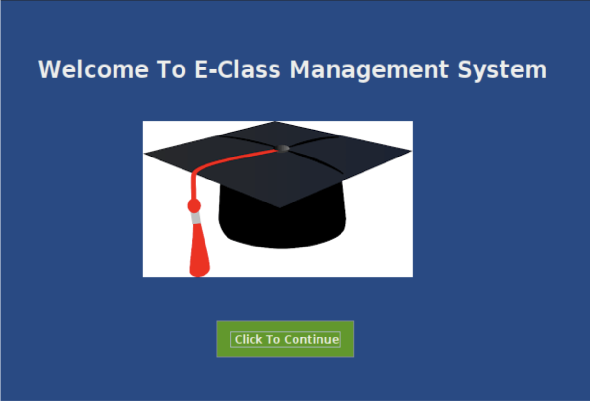
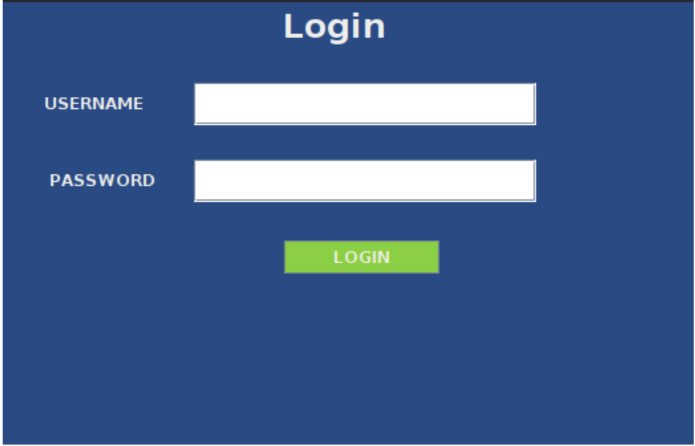
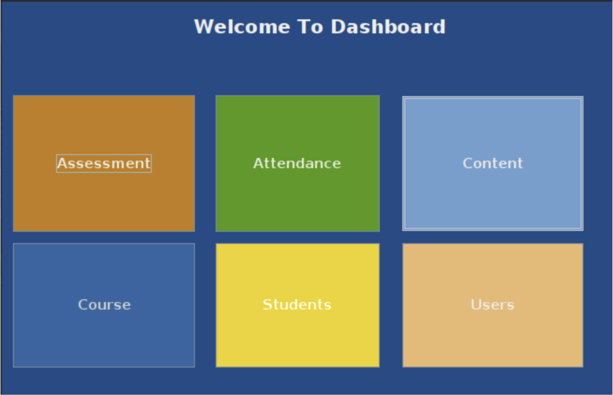
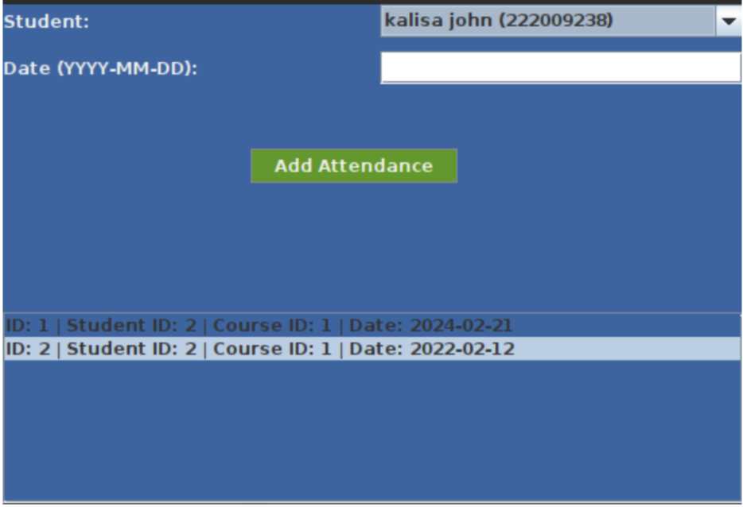
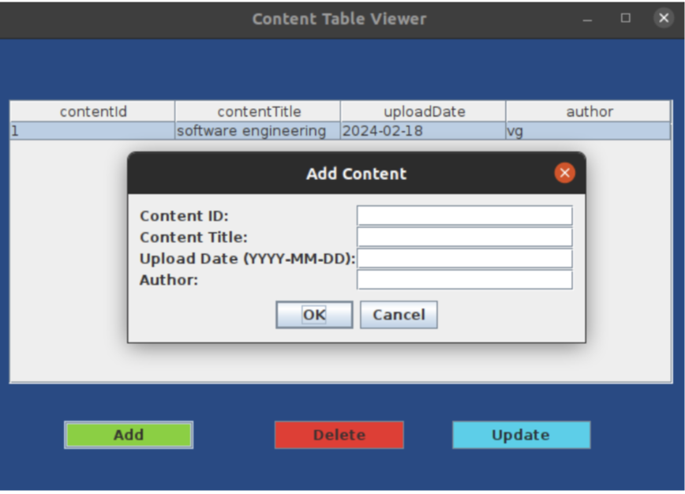
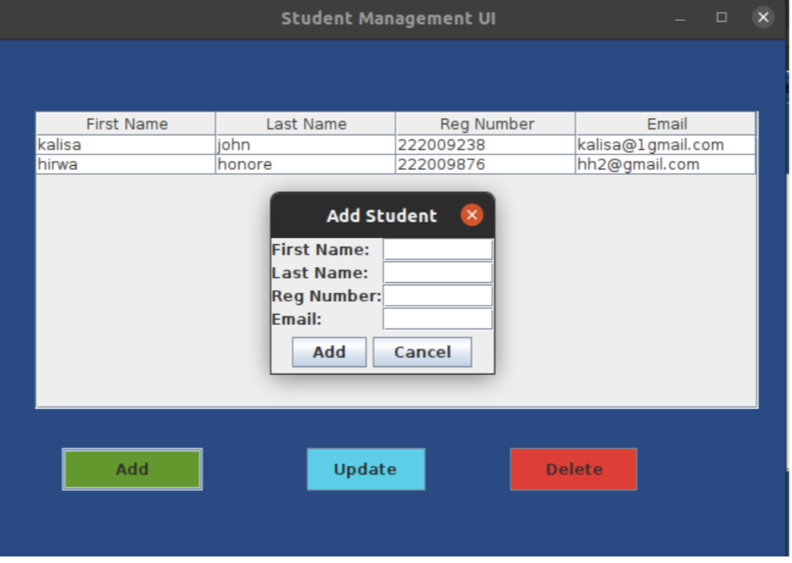
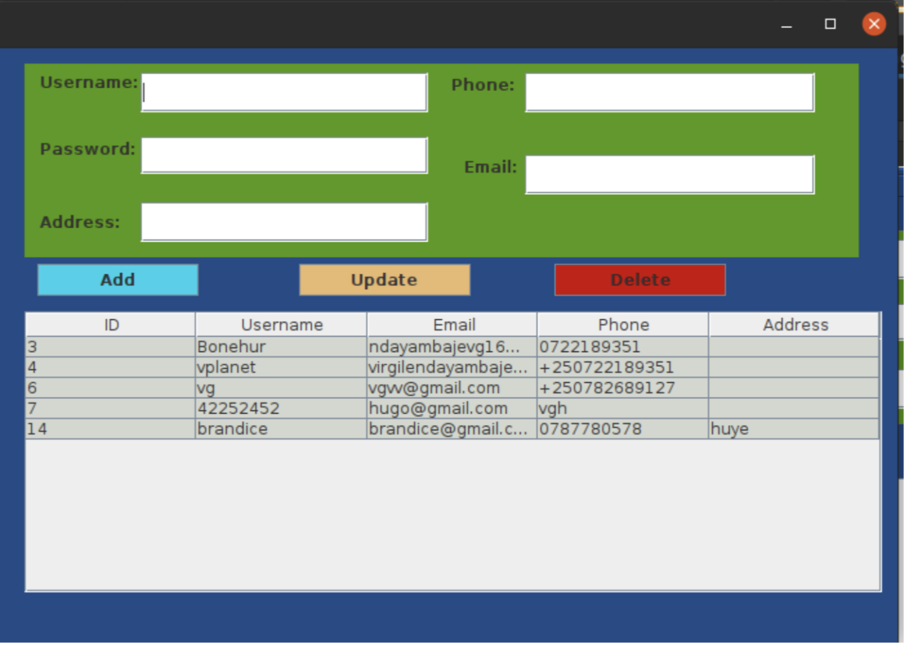

An assessment table in an e-learning system is a visual representation of learner performance data. It typically displays information about learners, assessments they've taken, and their corresponding scores or results.
An attendance table:
in an e-class system is a record of a learner's participation in online courses or activities. It offers instructors and learners a clear view of engagement and completion rates.
A content table:
in an e-class system acts as a digital course catalog, providing instructors and learners with an organized overview of the learning materials available within a specific course or curriculum.
A student table:
in an e-class system serves as a centralized repository for managing student information and tracking their progress within the platform. It allows instructors and administrators to efficiently view and manage student data.
user table:
serves as the foundation for user accounts and access control. It stores essential information about the individuals who interact with the platform.
2 . JAVA PROGRAMMING
Introduction
In this chapter I will be describing how powerful general-
purpose programming language was used to create the analyzed system. Under this chapter I will undergo full detail of how everything will function together with database that have been described above and how it copes with a fully analyzed system.
Tools used to develop this system in java programming:
Eclipse IDE: an integrated development environment used in computer programming. It contains a base workspace and an extensible plug-in system for customizing the environment. It is the second-most-popular IDE for Java development, and, until 2016, was the most popular.
JAR stands for Java Archive. It's a file format based on the popular ZIP file format and
is used for aggregating many files into one. Although JAR can be used as a general archiving tool, the primary motivation for its development was so that Java applets and their requisite components.
MySQL Connectors. MySQL provides standards-based drivers for JDBC, ODBC, and
.Net enabling developers to build database applications in their language
Forms in my E-class management Project and their descriptions
WELCOME PAGE OR LANDING PAGE IN MY ECLASS MANAGEMENT SYSTEM
The landing page includes a welcome message, an image icon, and a button labeled "Click To Continue."
Clicking the button opens a login window, represented by the Login class, and closes the current landing page window.

On this page will allow system administrator to click continue which will navigate him or her to login page and use credentials
Login form
When the login button is clicked, it connects to a MySQL database.
It checks if the provided username and password match any records in the database. If there's a match, it opens a dashboard window.
Otherwise, it displays an error message.

After the user inputs the correct credentials and they meet what is stored in the database he is navigated to the dashboard where he can use different features of the system .
Dashboard
dashboard for managing various aspects of an e-learning system or educational platform. Let's break down what each component of the dashboard does:
Welcome Label: Displays a welcome message at the top of the dashboard.
Assessment Button: Clicking this button opens up the Assessment Management User Interface (UI), allowing users to manage assessments, such as creating, editing, or deleting assessments.
Attendance Button: Clicking this button opens up the Attendance Tracking UI, which likely allows users to track and manage student attendance records.
Content Button: Opens the Content GUI, which probably allows users to manage educational content, such as uploading, organizing, or editing course materials like lectures, assignments, or reading materials.
Course Button: Clicking this button opens the Course CRUD (Create, Read, Update, Delete) GUI, enabling users to perform operations related to courses, such as creating new courses, viewing existing ones, updating course information, or deleting courses.
Students Button: Opens the Student Management UI, likely providing functionality to manage student information, such as adding new students, updating their details, or removing them from courses.
Users Button: Clicking this button opens the Add User UI, which probably allows administrators or authorized users to add new users to the system, such as instructors, administrators, or students.
Each button corresponds to a different aspect of managing the e-learning system, providing a convenient interface for administrators or users with appropriate permissions to perform necessary actions within the system.

After the user inputs the correct credentials and they meet what is stored in the database he is navigated to the dashboard where he can use different features of the system .
Attendance
interface for tracking student attendance. It connects to a MySQL database to retrieve student information and existing attendance records. Upon launch, it loads student data into a combo box and attendance records into a scrollable list. Users can select a student from the combo box, input a date, and add attendance records with a click of a button. The application handles database interactions, including adding new attendance records and refreshing the display to reflect changes. Error handling ensures users are notified of any issues, such as database connection errors or failed data loading attempts. Overall, this application simplifies the process of managing student attendance records through a convenient graphical interface.

After the user inputs the correct credentials and they meet what is stored in the database he is navigated to the dashboard where he can use different features of the system .
Content
interface for viewing, adding, updating, and deleting content records stored in a MySQL database. The main window displays content records in a table format, with buttons for performing CRUD (Create, Read, Update, Delete) operations. Upon launch, it connects to a MySQL database named "Brando_Db" and populates the table with data from the "content" table. Users can add new content by filling in a dialog with content ID, title, upload date, and author details. The application handles database interactions for CRUD operations, such as adding, deleting, and updating content records. Error handling ensures users are notified of any issues encountered during database interactions.

After the user inputs the correct credentials and they meet what is stored in the database he is navigated to the dashboard where he can use different features of the system .
Student Management GUI
Student Management UI," allows users to manage student records stored in a MySQL database. It features a GUI interface with input fields for adding, updating, and deleting student information. The main components include text fields for entering the first name, last name, registration number, and email address of students. Additionally, it includes buttons for performing CRUD operations such as Add, Update, and Delete. The application displays student data in a table format using the DefaultTableModel class. The data in the table is dynamically loaded from the MySQL database upon initialization. The application establishes a JDBC connection to the MySQL database using the provided URL, username, and password. It handles SQL exceptions and displays error messages to the user in case of database-related issues. The CRUD operations are implemented securely within try-with-resources blocks to ensure proper resource management. Lastly, the application provides functionality to clear input fields after successful operations and allows users to select a student from the table for updating or deleting their information.

Users Management Gui
user interface (GUI) application for managing user information stored in a MySQL database. It allows users to perform basic CRUD (Create, Read, Update, Delete) operations on user records. The application consists of text fields for entering user data, buttons for adding, updating, and deleting users, and a table for displaying user records fetched from the database. The application establishes a connection to the MySQL database, retrieves user data, and displays it in the table. Users can interact with the GUI to add new users, update existing user information, or delete users from the database.
